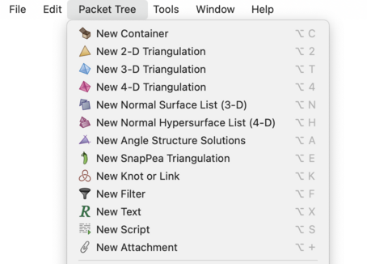
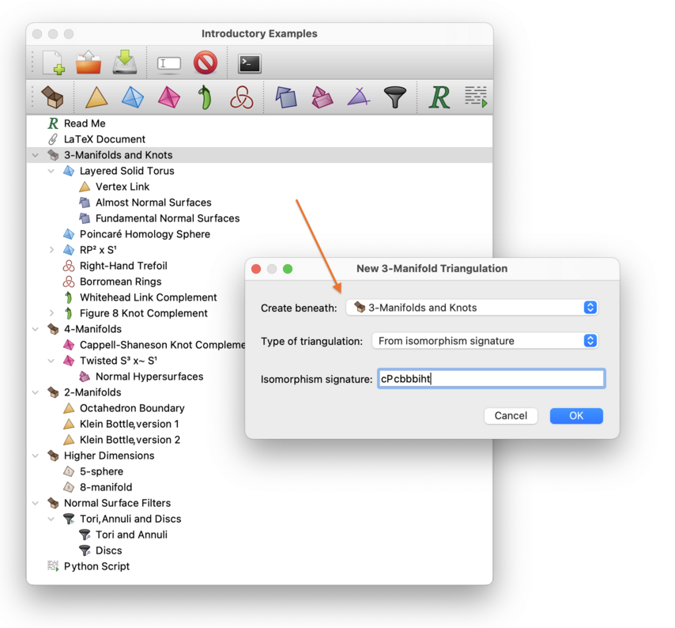
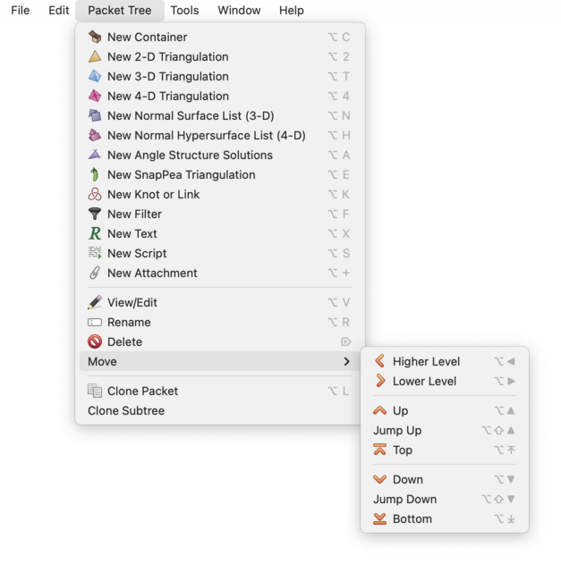

General Operations on Packets | |
| Prev | Working with Packets | Next |
The menu contains operations that can be applied to any packet in Regina. Most of these operations are also offered as toolbar buttons. Here we describe each of these operations in turn.
New packets of any type can be created through the corresponding item in the menu, or by pressing the toolbar button with the corresponding packet icon.

For example, to create a new 3-manifold triangulation, either select → in the menu, or press the toolbar button with the following icon:
When you create a new packet, you will be asked where in the tree your new packet should appear. Choose a suitable parent in the box marked Create beneath:, and your new packet will be added as a child of whatever you choose here.

You might also be asked for some additional information, according to which type of packet you are creating. In the example above, you must select the type of triangulation to create; moreover, since the user has selected to use an isomorphism signature, you must type in the isomorphism signature as well.
The new packet will be given a label automatically, though you can of course rename it if you like.
To make an identical copy of an existing packet, you can use either the → or the → menu item. Regina will clone whatever packet is currently selected, and the clone will be added adjacent to it in the tree.
If you choose , only the selected packet will be copied (not any of its children). If you choose , Regina will clone not only the selected packet but also the entire subtree beneath it (i.e., its children, their children and so on).
Tip
If you have selected some packet in the tree but you have different packets open for viewing or editing, it is the selected packet in the tree that will be cloned, not the packets that you are currently viewing.
By selecting → from the menu (or the corresponding toolbar button), you can give the selected packet a new label.
Tip
If you have selected some packet in the tree but you have different packets open for viewing or editing, it is the selected packet in the tree that will be renamed, not the packets that you are currently viewing.
If you select → from the menu (or press the corresponding toolbar button), whatever packet you have selected in the tree will be deleted. Note that all children of the selected packet will also be deleted, and their children and so on.
Caution
If you have selected some packet in the tree but you have different packets open for viewing or editing, it is the selected packet in the tree that will be deleted, not the packets that you are currently viewing. Be careful, since deleting a packet cannot be undone!
The → submenu allows you to reorganise your packet tree by moving packets around. Whenever a packet moves, all of its children (and their children and so on) will move along with it.

Selecting Higher Level or Lower Level will move the selected packet to a different parent (either shallower or deeper in the tree respectively). The remaining options will keep the same parent, but will move the selected packet up or down with respect to its “siblings”. Up or Down will move the packet by one step, and Top or Bottom will make it the first or last child respectively of its parent. Jump Up or Jump Down will move the packet several steps at a time; the precise number of steps can be configured in Regina's general settings.
Tip
All of the actions in the → menu have keyboard shortcuts, allowing you to reorganise the packet tree quickly using just the keyboard.
| Prev | Contents | Next |
| Different Packet Types | Up | Triangulations |